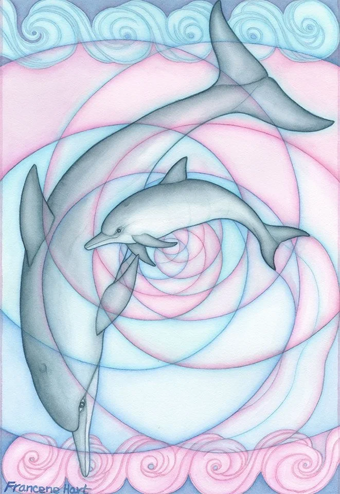
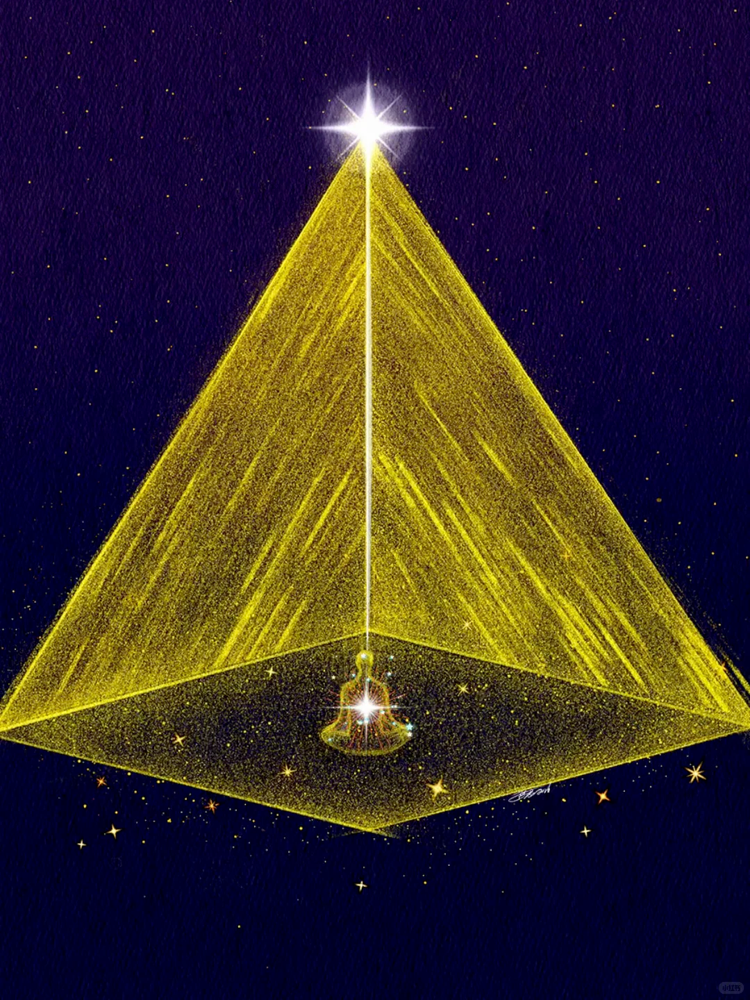
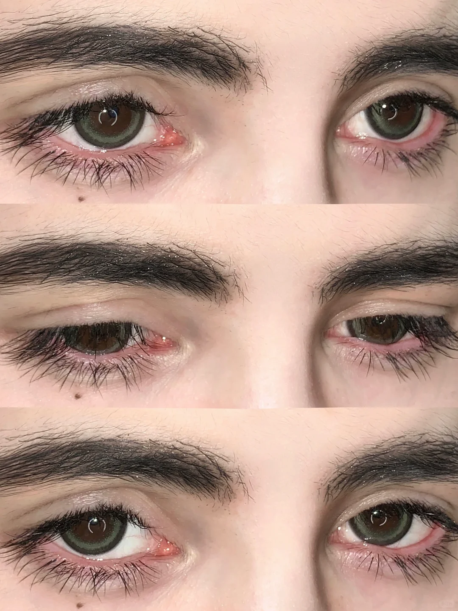
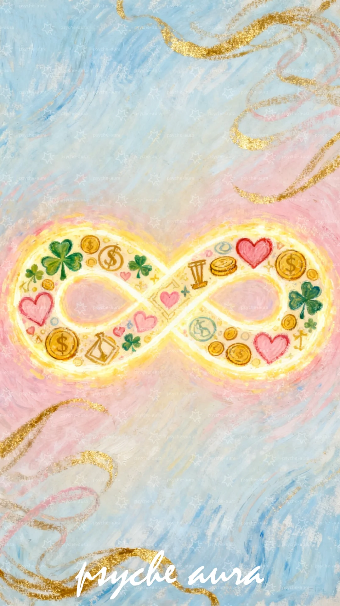
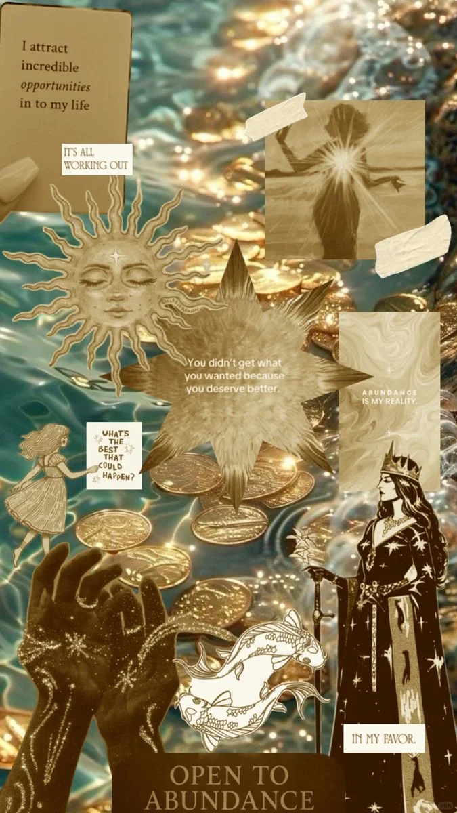

METAPHYSICS · ASSUMPTION · SUBLIMINAL PRACTICE
Philosophy student theorizing manifestation through metaphysics.
Manifestation raises a metaphysical question: if consciousness can shape reality, what kind of relationship must exist between the mind and the world?

Tracing manifestation from historical metaphysics, idealism, Law of Attraction, and contemporary digital culture.


